블랙러시안
| 글라스 | 기법 |
| 올드 패션드 글라스 | 빌드 |
| 가니쉬 | |
| 없음 | |
| 재료 | |
|
보드카 1oz 커피 리큐어 1/2oz |
|
탄생에 대한 이야기는 여러가지가 있지만 기본적으로 러시아를 대표하는 칵테일인 데에서와 커피 리큐르의 색상에서 블랙을 따와 '블랙 러시안'이라는 이름이 붙었다고 하며 별개로 구소련이 암흑의 세계로 불리며 여러 사회적 정치적 장벽으로 가로막혀져있을 때 구속에 대한 저항이라는 의미도 가지고 있다고 한다.

시 브리즈
| 글라스 | 기법 |
| 하이볼 글라스 | 빌드 |
| 가니쉬 | |
| 레몬 또는 라임 웨지 | |
| 재료 | |
|
보드카 1 1/2oz 크렌베리주스 3oz 자몽주스 1/2oz |
|
시 브리즈(Sea Breeze)는 영화 〈프렌치 키스(French Kiss)〉에서 주인공 멕 라이언이 프랑스 해변에서 바닷바람을 맞으며 즐겼던 칵테일입니다. '바다에 불어오는 바람' 이라는 뜻을 가지고 있는 칵테일로서 1980년대 미국 서해안에서 유행이 일어났다고 하는 시 브리즈 칵테일.
코스모폴리탄
스페인어로 채에 거른 파인애플이라는 뜻으로 인기있는 트로피컬 칵테일입니다.

| 글라스 |
| 마티니 글라스 |
| 기법 |
| 쉐이킹 |
| 가니쉬 |
| 레몬 필 트위스트 |

| 재료/레시피 |
|
1. 쉐이커에 보드카 1oz를 넣는다. 2. 트리플 섹 1/2oz를 넣는다. 3. 라임주스 1/2oz를 넣는다. 4. 크랜베리주스 1/2oz를 넣는다. 5. 얼음과 함께 쉐이킹 한다. 6. 스트레이너로 걸러내 마티니 글라스에 따라주면 완성! |

섹스 온 더 비치
| 글라스 |
| 하이볼 글라스 |
| 기법 |
| 빌드 |
| 가니쉬 |
| 오렌지 반쪽 |
| 재료 |
|
보드카 3/4oz, 크렘 드 카시스 3/4oz 미도리 3/4oz 크랜베리 주스 1oz 파인애플주스 2oz |
| 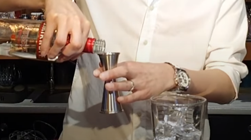 | 1. 쉐이커에 보드카 3/4oz를 넣는다. |
| 2. 쉐이커에 크렘 드 카시스 3/4oz를 넣는다. | 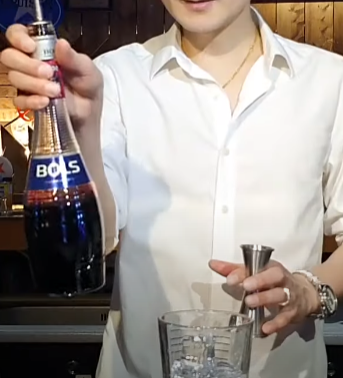 |
| 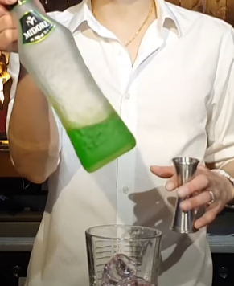 | 3. 쉐이커에 미도리 3/4oz를 넣는다. |
| 4. 쉐이커에 크렌베리주스 1oz를 넣는다.. | 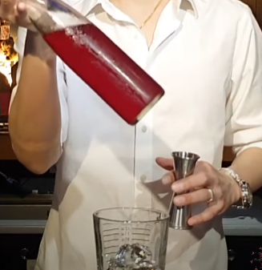 |
| 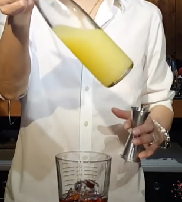 | 5. 쉐이커에 파인애플주스 2oz를 넣는다. |
| 6. 쉐이킹 해준다. | 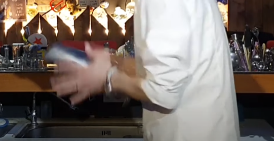 |
| 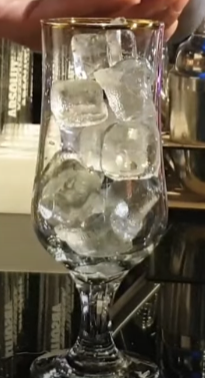 | 7. 잔에 얼음을 채워 음료를 넣는다. |
| 8. 잔에 가니쉬 해주면 완성! | 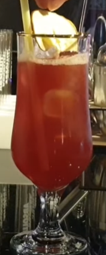 |
섹스 온 더 비치 이야기
1987년 플로리다의 마이애미 해변의 연장선상에 위치해 있는 포트로더데일(Fort Lauderdale)에서 개최된 1,000달러가 상금으로 걸린 칵테일 대회에서 테드 피지오(Ted Pizio) 바텐더가 처음 선보인 것으로, 당시 플로리다의 휴양지인 포트로더데일에 관광객들의 방문 사유가 해변 위에서 야외섹스를 위해서였는데, 여기서 영감이 떠올라 “Sex on the Beach!” 라고 외친 것에서 유래되었다. 인기가 많은 것은 이름 때문이기도 하지만, 남자가 이 칵테일을 시켜주어 여자가 마신다면 반드시 두 사람은 키스를 나누어야 한다는 풍습이 있어서기도 하다..


블러디 메리
이름의 유래에 대해서도 이래저래 말이 많다. 가장 유력한 가설은 칵테일의 색이 피를 연상시키는 붉은색인 이유로 위에 언급된 메리 1세의 별칭을 연상시킨다 하여 붙여졌다는 가설이며, 이외에도 페르낭 프티오가 개인적으로 알고 지내던 ‘메리’라는 소녀의 이름을 가져와 지었다는 가설이나, 처음으로 블러디 메리를 마신 손님이 지어준 이름이라는 가설도 존재한다.서구권에서 해장술로 자주 쓰이는 칵테일이다.2. 보드카 1oz를 넣어주세요.
3. 레몬주스 1/2oz를 넣어주세요.
4. 토마토 주스를 3oz를 넣어주세요.
5. 우스터 소스 2Dashes를 넣어주세요.
6. 타바스코 소스 기호에 맞게 넣어주세요.
7. 셀러리 소금 기호에 맞게 넣어주세요.
8. 후추 기호에 맞게 넣어주세요.
보드카 1 1/2oz

레몬 주스 1/2oz
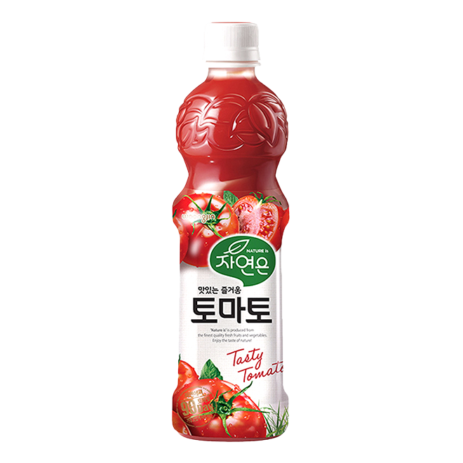토마토 주스 3oz
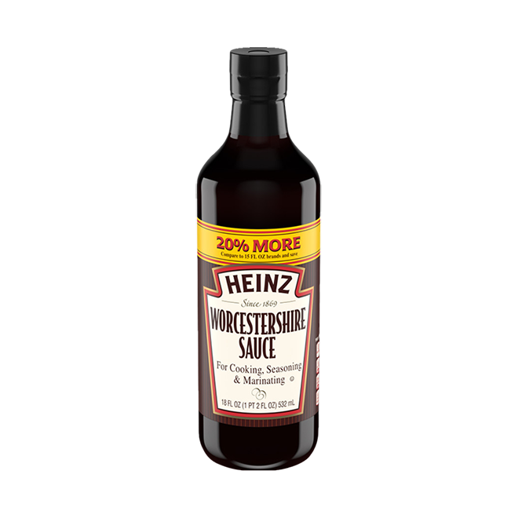우스터 소스 2Dashes
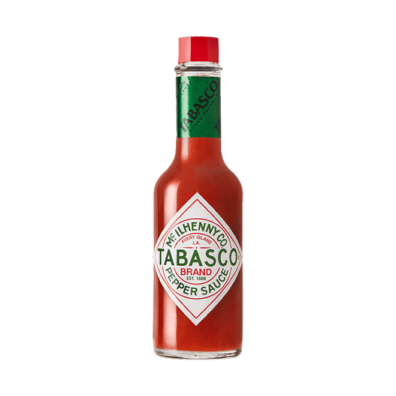타바스코 소스 선택
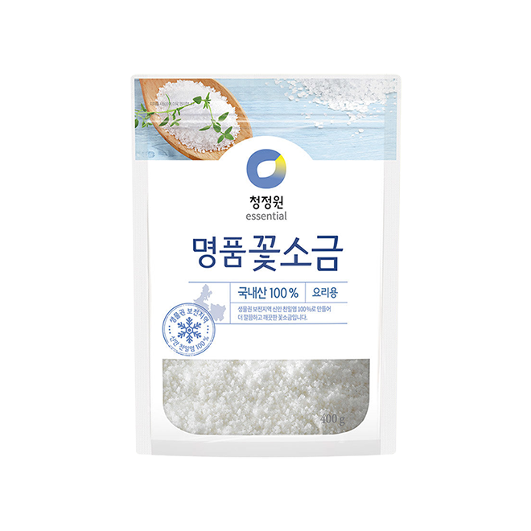셀러리 소금 선택
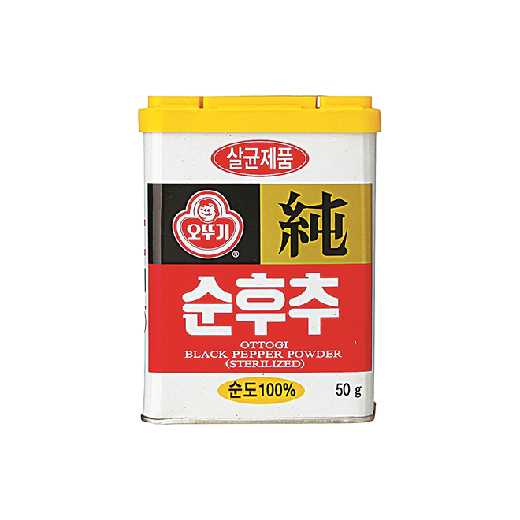후추 선택